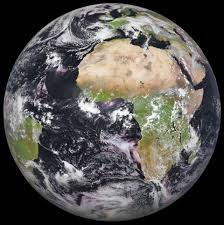

الأَرْض (رمزها: 🜨) هي ثالث كواكب المجموعة الشمسية بعدًا عن الشمس بعد عطارد والزهرة، وتُعتبر من أكبر الكواكب الأرضية وخامس أكبر الكواكب في النظام الشمسي، وذلك من حيث قطرها وكتلتها وكثافتها، ويُطلق على هذا الكوكب أيضًا اسم العالم.

تعتبر الأرض مسكنًا لملايين الأنواع من الكائنات الحية، بما فيها الإنسان؛ وهي المكان الوحيد المعروف بوجود حياة عليه في الكون. تكونت الأرض منذ حوالي 4.54 مليار سنة، وقد ظهرت الحياة على سطحها بين حوالي 3,5 إلى 3,8 مليارات سنة مضت. ومنذ ذلك الحين أدى الغلاف الحيوي للأرض إلى تغير الغلاف الجوي والظروف غير الحيوية الموجودة على الكوكب، مما سمح بتكاثر الكائنات التي تعيش فقط في ظل وجود الأكسجين وتكوّن طبقة الأوزون، التي تعمل مع المجال المغناطيسي للأرض على حجب الإشعاعات الضارة، مما يسمح بوجود الحياة على سطح الأرض. تحجب طبقة الأوزون الأشعة فوق البنفسجية، ويعمل المجال المغناطيسي للأرض على إزاحة وإبعاد الجسيمات الأولية المشحونة القادمة من الشمس بسرعات عظيمة ويبعدها في الفضاء الخارجي بعيدا عن الأرض، فلا تتسبب في الإضرار بالكائنات الحية.